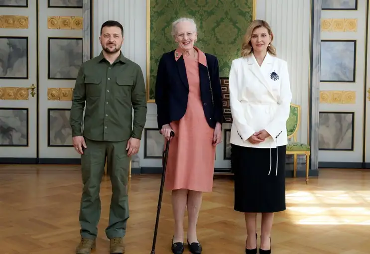
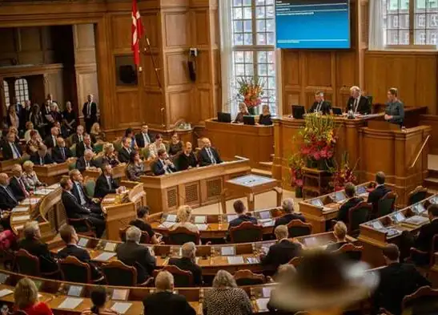
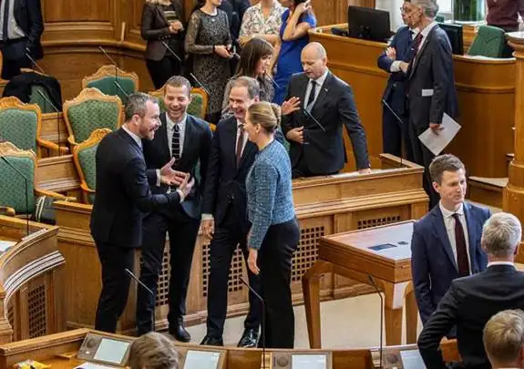
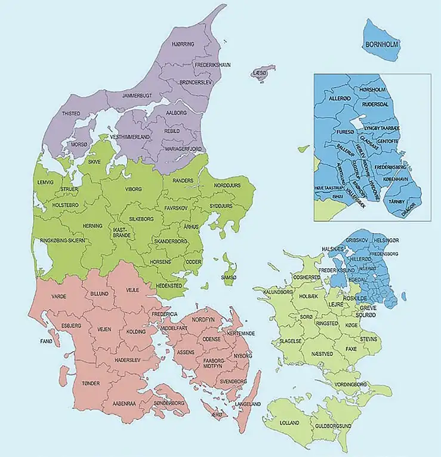
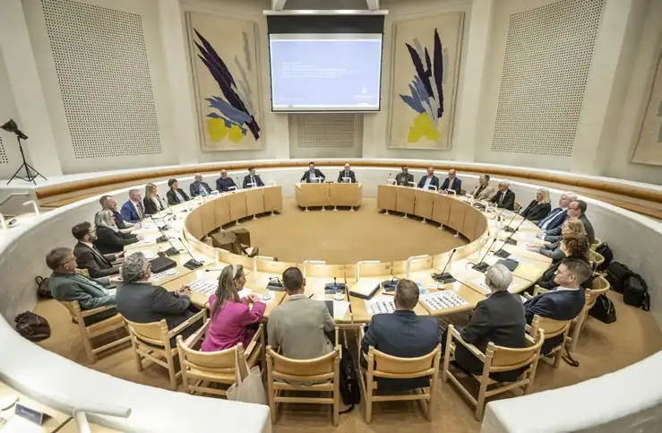
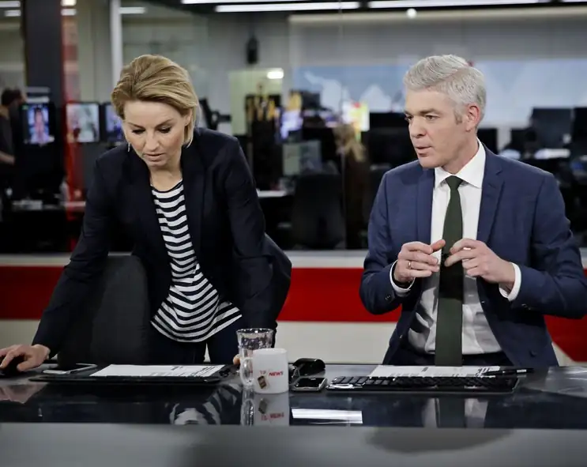
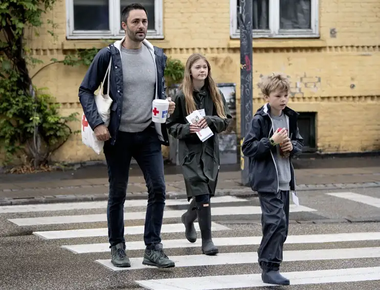
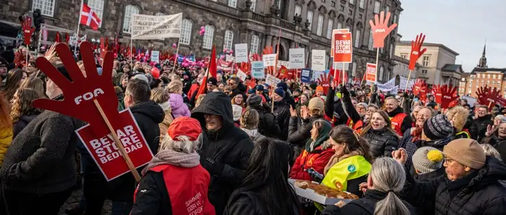

Det danske demokrati
Officiel lydbog
Kapitel 2 Det danske demokrati
2.1 INDLEDNING
Det danske demokrati har udviklet sig gennem mere end175 år. Det er blevet påvirket af begivenheder og politiske ideer i Danmark og i udlandet. Det danske folkestyre har meget til fælles med andre europæiske demokratier, men det har også fundet sin egen særlige form. I dette kapitel beskrives nogle af de vigtigste kendetegn ved den måde, demokratiet fungerer på i dagens Danmark.
Det danske demokrati bygger på en skriftlig forfatning, Danmarks Riges Grundlov. Grundloven handler især om det nationale demokrati, som det foregår i Folke tinget. Den indeholder regler om Folketinget, om regeringen og om domstolene. Grundloven sætter blandt andet visse grænser for, hvordan staten må bruge sin magt, ligesom den sikrer borgerne en række grundlæggende rettigheder. Der er i Danmark en stærk tradition for lokalt demokrati og selvstyre. Det lokale selv styre har dybe rødder i den danske historie. Grundloven giver også kommunerne en rolle at spille i varetagelsen af lokale spørgsmål.
Det lokale selvstyre i kommunerne giver borgerne mulighed for at være med til at bestemme over mange forhold i lokalsamfundet. Det lokale demokrati præger også mange af hverdagens helt nære forhold. I blandt andet skolebestyrelsen, i boligforeningen og i forskellige udvalg på arbejdspladsen kan man som forældre, beboere eller medarbejdere få indflydelse på ting, der angår ens hverdag.
Det danske folkestyre har mange forskellige aktører med hver deres roller, hold- ninger og interesser. I Danmark er organisationer og foreninger også inddraget i det politiske liv. Det kan blandt andre være organisationer på arbejdsmarkedet, som for eksempel Fagbevægelsens Hovedorganisation (FH) og Dansk Arbejds- giverforening (DA), eller erhvervs- eller miljøorganisationer, som alle består af en lang række fagforeninger, arbejdsgiverforeninger og interesseorganisationer.
Slotsholmen i København med Folketinget, Højesteret og flere ministerier. Foto: Tue Schou Pedersen.
2.2 DEN DANSKE STYREFORM
2.2.1 GRUNDLOVEN – DANMARKS FORFATNING
Rammerne for det danske demokrati er fastlagt i Danmarks Riges Grundlov, som er Danmarks forfatning. Det er en ret kort tekst med i alt 89 paragraffer, der inde holder de grundlæggende regler om og principper for den danske stats styreform. Grundloven sikrer også befolkningen en række fundamentale rettigheder og friheder.
Danmark fik sin første demokratiske grundlov den 5. juni 1849. Derfor er denne dato Grundlovsdag. I næsten 200 år forinden (siden 1660-61) havde landet været styret af en enevældig konge med udgangspunkt i Kongeloven fra 1665. Grund lovens vedtagelse betød, at kongens magt blev delt med folkevalgte repræsen tanter.
Grundloven fra 1849 er et fundament, der siden gradvist er blevet bygget videre på. Først med Systemskiftet i 1901 måtte kongen acceptere, at Folketinget bestemmer, hvem der skal have regeringsmagten. Dette system kaldes for parlamentarisme.
Grundloven i Folketinget. Foto: Joachim Adrian/Ritzau Scanpix.
I begyndelsen var det kun mænd over 30 år, der kunne stemme. De måtte ikke have modtaget fattighjælp og måtte ikke være umyndiggjorte. De skulle desuden have fast bopæl og være uberygtede. Kvinder og tjenestefolk, det vil sige personer uden egen husstand, som tjente og boede hos en anden familie, fik ikke valgret.
Dette skete først med grundloven i 1915. Siden er valgretsalderen til Folketinget gradvist blevet nedsat fra 30 år frem til den gældende valgretsalder på 18 år, som blev vedtaget i 1978.
Grundloven er blevet ændret i 1866, 1915, 1920 og 1953. Den nuværende grundlov er således fra 1953. Meget har ændret sig i Danmark de sidste 175 år. Men mange af principperne og store dele af teksten i den nyeste grundlov stammer helt tilbage fra grundloven i 1849.
Det fremhæves ofte, at grundloven er en fast, men rummelig ramme om det danske folkestyre. Den er formuleret så generelt, at det politiske liv har kunnet forandre sig, uden at det har været nødvendigt at ændre bestemmelserne i grundloven.
Grundloven skal være med til at sikre politisk stabilitet og beskytte borgernes grundlæggende rettigheder. Det er derfor gjort meget vanskeligt at ændre grundloven. Grundloven kan kun ændres, hvis der er tilslutning fra både Folke tinget og befolkningen.
Det sikrer blandt andet, at et tilfældigt politisk flertal ikke kan fratage et mindretal dets grundlæggende rettigheder eller indføre en helt anden styreform. Grund loven fra 1953 bærer stadig præg af sproget tilbage fra 1849. Der anvendes ord og udtryk, som ikke er almindelige i dag. Læser man grundloven, kan man også nemt få det indtryk, at kongen stadig spiller en stor politisk rolle. Men reglerne i grundloven fortolkes i praksis på en sådan måde, at kongens magt er over taget af regeringen. Grundlovens sprog er en af grundene til, at det til tider har været debatteret, om grundloven bør ændres, så den passer bedre til nutiden. Det har også været diskuteret, om grundloven skal være bedre til at beskytte de grundlæggende friheds- og menneskerettigheder, og om reglerne for Danmarks deltagelse i internationalt samarbejde skal ændres. Mange mener imidlertid, at der ikke er grund til at ændre en velfungerende grundlov, som giver mulighed for tilpasning til tiden. I øvrigt er det endda meget svært og måske nærmest umuligt at ændre grundloven på grund af de strenge krav hertil.
Den 5. juni kaldes Grundlovsdag og fejres hvert år som en national festdag med politiske møder over hele landet.
HVAD SIGER GRUNDLOVEN?
Grundloven er den øverste lov i Danmark. Folketinget og regeringen skal derfor respektere grundloven og må ikke gøre noget i strid med grundloven. Grund loven fastsætter de vigtigste spilleregler for det nationale demokrati i Danmark.
Grundloven indeholder blandt andet regler om:
• Statens øverste organer – Folketinget, regeringen og domstolene – og
forholdet imellem dem. • Valg af medlemmer til Folketinget. • Vedtagelse af love. • Den danske stats forhold til omverdenen. • Den danske folkekirke. • Det lokale selvstyre. • Borgernes grundlæggende rettigheder.
Danmark har et repræsentativt demokrati. Det vil sige, at befolkningen vælger repræsentanter til Folketinget, der så træffer beslutninger på folkets vegne. De folkevalgte står på valgdagen til regnskab over for vælgerne. Det er vælgerne, der afgør, om det enkelte parti eller den enkelte politiker skal vælges igen. Folkestyret i Danmark er således overvejende et indirekte demokrati. Det sker dog også, at der afholdes folkeafstemninger. Her kan befolkningen direkte tage stilling til et konkret politisk spørgsmål.
I det danske demokrati gælder parlamentarismen. Det betyder, at en regering ikke kan dannes eller blive ved magten, hvis den har et flertal i Folketinget imod sig. Da vælgerne afgør, hvordan Folketinget skal sammensættes, bestemmer vælgerne også i den forstand, hvem der skal have regeringsmagten. I 1953 blev dette parlamentariske princip indføjet i selve grundlovsteksten.
Statens magt er tredelt i en lovgivende magt, en udøvende magt og en dømmende magt. Denne tredeling af magten blev indført med grundloven i 1849, der ophæ vede kongens enevældige magt. Magtens tredeling betyder, at regeringen og Folketinget i forening lovgiver (den lovgivende magt). Det er regeringen, der – via ministerierne – administrerer lovene i praksis og fører dem ud i livet (den udøvende magt). Den tredje magt er domstolene (den dømmende magt). De afgør konflikter mellem borgerne og mellem borgerne og staten. Det er også domstolene, der dømmer i straffesager.
Det er grundtanken, at de tre magter skal kontrollere og begrænse hinan dens magtudøvelse. Magtens tredeling skal med andre ord sikre, at magten i samfundet ikke bliver centraliseret eller misbrugt. Delingen beskytter borgerne mod vilkårlige indgreb. Denne tredeling af magten findes i forskellige udgaver i de fleste demokratiske lande.
Danmarks statsoverhoved er en monark. Det vil sige en konge eller – som peri oden 1972-2024 – en dronning. Monarkens position går i arv og giver ikke nogen politisk magt. Monarkens og kongehusets andre medlemmer har især en række ceremonielle opgaver og opgaver som repræsentant for Danmark.
Kongehuset repræsenterer for eksempel det officielle Danmark over for uden landske statsoverhoveder. Den politiske magt udøves alene af regeringen og Folketinget. Sådan er det også i andre europæiske monarkier som Sverige, Norge, Belgien og Storbritannien. Danmark har altså ikke et folkevalgt – og poli tisk magtfuldt – statsoverhoved som for eksempel præsidenterne i Frankrig og USA.

Dronning Margrethe 2. (født 1940, reg. 1972-2024) modtager Ukraines præsident Volodymyr Zelensky og hans kone Olena på statsbesøg i Danmark i 2023. Foto: Kongehuset.
Grundloven indeholder også en regel om, at dansk indfødsret (statsborgerskab) kun kan meddeles ved lov. Det betyder, at det er regeringen og Folketingets flertal, der bestemmer, hvilke udlændinge der kan tildeles dansk indfødsret.
Grundloven sikrer og beskytter desuden flere grundlæggende friheds- og menneskerettigheder. Det drejer sig blandt andet om retten til frit at give udtryk for sine holdninger under ansvar for domstolene (ytringsfrihed), retten til at mødes med andre (forsamlingsfrihed) og retten til at danne foreninger. Grundloven beskytter også den personlige frihed, religionsfriheden, ejendoms retten og privatlivets fred.
Frihedsrettighederne beskytter således den enkelte borger og mindretallet imod, at flertallet misbruger sin magt.
2.2.2 DEMOKRATIETS INSTITUTIONER
FOLKETINGET
Folketinget er Danmarks parlament og har sammen med regeringen den lovgivende magt. Folketinget har til huse på Christiansborg i København.
Folketinget har 179 medlemmer. De 175 vælges i Danmark, 2 på Færøerne, og 2 i Grønland.
Ved det seneste folketingsvalg i 2026 blev der valgt 86 kvinder (48 procent) og 93 mænd (52 procent).
Folketingsmedlemmerne hører næsten altid til et politisk parti, og den politiske debat i Folketinget foregår typisk mellem partierne. Det sker ved, at de enkelte medlemmer fremfører deres partis politiske synspunkter. Folketingets møder er i udgangspunktet offentlige. Enhver kan komme ind på tilhørerpladserne i folke tingssalen og lytte til debatterne. Denne åbenhed er en vigtig del af demokratiet. Folketingets møder bliver også optaget, så man kan se dem på internettet via Folketingets hjemmeside.
Folketingsåret begynder den første tirsdag i oktober, hvor Folketinget mødes efter sommerferien. På mødet holder statsministeren en tale, hvor han eller hun giver en redegørelse for rigets stilling – det vil sige, hvilke udfordringer og muligheder regeringen ser, og hvad regeringen har tænkt sig at gøre ved det. Denne tale kaldes for statsministerens åbningstale. Folketingsmedlemmerne debatterer herefter indholdet i talen.
Når Folketinget behandler et forslag til en ny lov, foregår det i folketingssalen på Christiansborg. Her diskuterer medlemmerne fra de politiske partier alle lovfor slag, inden de til sidst stemmer om dem. En del af lovarbejdet foregår også i et af de mange udvalg, som Folketinget har nedsat. Hvert år vedtager Folketinget i gennemsnit cirka 200 lovforslag. Et af disse er forslaget til finansloven, som er statens samlede budget for det næste år.
Folketinget bestemmer også, hvem der skal have regeringsmagten efter et valg. Ifølge grundloven er det formelt kongen, der udnævner regeringen. Men kongen må ikke udnævne en regering, der har et flertal i Folketinget imod sig. Det følger af det parlamentariske princip. Når en ny regering skal dannes, vil der ofte blive afholdt en såkaldt kongerunde.
I en kongerunde tager to repræsentanter for hvert parti efter tur til kongen for at give råd om, hvem de mener, der skal lede forhandlingerne om en ny regering, eller hvem, de mener, skal være ny statsminister. På baggrund af de råd, som kongen modtager, kan han enten udpege den person, der har flest mandater bag sig, som forhandlingsleder eller pege direkte på en person, som får til opgave at danne en ny regering med sig selv som statsminister.
Det er regeringen og den offentlige forvaltning, der skal føre lovene ud i livet. En af Folketingets opgaver er derfor at kontrollere, at det sker på den måde, som Folketinget har ønsket. Kontrollen kan for eksempel udføres ved, at det enkelte folketingsmedlem beder en minister om at svare mundtligt eller skriftligt på et spørgsmål. Det er den mest almindelige måde at føre kontrol på, og der stilles hvert år flere tusinde spørgsmål til ministrene. Et eller flere af Folketingets medlemmer kan også rejse en forespørgselsdebat. Det giver mulighed for en noget længere debat i folketingssalen. Folketingets stående (faste) udvalg kan også kalde en minister i såkaldt samråd. Ministeren må så møde frem i udvalget og besvare spørgsmål om konkrete politiske emner.
På disse måder kan Folketinget løbende følge med i regeringens arbejde og udtrykke sin støtte til eller kritik af regeringen. Hvis et flertal i Folketinget for eksempel er meget utilfreds med en minister, kan Folketinget tvinge denne minister til at gå af ved at udtale sin mistillid til ministeren.
I praksis vælger en minister dog ofte selv at træde tilbage, hvis der udtales alvorlig kritik. Folketingets flertal kan også udtale mistillid til hele regeringen. Det sker ved, at et flertal i Folketinget udtaler sin mistillid til statsministeren. Det kaldes et mistillidsvotum.
Regeringen må herefter gå af, eller statsministeren må udskrive nyvalg. Under forespørgselsdebatter fremsætter oppositionen ofte forslag, der kritiserer rege ringens politik. Der vedtages dog sjældent forslag, der har karakter af et mistil lidsvotum til regeringen. Men muligheden for at gøre det spiller en betydelig rolle i magtbalancen mellem regeringen og oppositionen. Folketingets magt over regeringen og ministrene er kernen i parlamentarismen. Regeringen og de enkelte ministre står således politisk til ansvar over for Folketinget.
Hvis en minister mistænkes for at have gjort noget ulovligt som led i sit arbejde som minister, kan Folketinget eller regeringen beslutte at stille ham eller hende for en særlig domstol, Rigsretten.
Siden Rigsretten blev indført med den første grundlov i 1849, har der kun været rejst seks rigsretssager mod ministre. Rigsretten består af op til 15 dommere fra Højesteret og lige så mange medlemmer, som er valgt af Folketinget for seks år ad gangen. De medlemmer, som Folketinget vælger, kan ikke samtidig være medlemmer af Folketinget. I nyere tid har der været rejst to rigsretssager. Den ene i forbindelse med den såkaldte Tamilsag, hvor en tidligere justitsminister i 1995 blev idømt fire måneders betinget fængsel for at have forhindret tamilske flygtninge fra Sri Lanka i at få familiesammenføring. Og i 2021 blev en tidligere udlændinge- og integrationsminister idømt 60 dages ubetinget fængsel for ulov ligt at have adskilt asylsøgende ægtefæller og samlevende par på asylcentre.
Christiansborg Slot.
FOLKETINGETS UDVALG
En stor del af Folketingets arbejde foregår i de stående (faste) udvalg, der nedsættes af Folketinget. De kaldes ofte for Folketingets værksteder. I folke tingssalen trækkes de store linjer op, men det er i udvalgene, at politikken bliver drøftet grundigt og detaljeret.
Udvalgene skal behandle lovforslag, der bliver fremsat. Når et lovforslag har været til førstebehandling i folketingssalen, sendes det normalt til nærmere behandling i et udvalg. Her kan borgere eller foreninger efter aftale med udvalget komme på besøg og fremlægge deres synspunkter. Alle har desuden mulighed for at fremføre deres synspunkter ved at skrive til udvalget. Når udvalget er færdig med at behandle et lovforslag, skrives der en rapport (betænkning). Den indeholder blandt andet de enkelte partiers holdning til lovforslaget. De stående udvalg fører også kontrol med den enkelte minister. En minister kan som nævnt kaldes i samråd, og udvalgets medlemmer kan stille spørgsmål til ministeren.
Det enkelte stående udvalg beskæftiger sig typisk med de politiske sager, der hører til et bestemt ministeriums fagområde. Folketinget har for eksempel et skatteudvalg, et finansudvalg og et beskæftigelsesudvalg, fordi der findes et skatte-, et finans- og et beskæftigelsesministerium. Folketinget har også andre stående udvalg, for eksempel et europaudvalg, der behandler sager, der vedrører samarbejdet i EU, og som stammer fra alle ministerier. Antallet af udvalg vari erer. Der er normalt mellem 20 og 25 stående udvalg. Folketingets udvalg består kun af medlemmer af Folketinget. Typisk har et udvalg 29 medlemmer, herunder en formand og en næstformand. Udvalgene er sammensat, så det enkelte parti har et antal udvalgsmedlemmer, der nogenlunde svarer til partiets størrelse i Folketinget. Tanken er, at et flertal i et udvalg skal afspejle et flertal i Folketinget.
Ifølge grundloven skal der være et udenrigspolitisk nævn. Regeringen har pligt til at rådføre sig med Det Udenrigspolitiske Nævn, før den træffer beslutning af større udenrigspolitisk rækkevidde. Det giver mulighed for en bred politisk debat og en bred politisk opbakning til de store udenrigspolitiske beslutninger som for eksempel, hvorvidt Danmark skal anvende militær magt mod en anden stat eller indgå en vigtig aftale med andre lande.
Fordi samarbejdet i EU er så omfattende, er der også oprettet et Europaudvalg. Der har først og fremmest til opgave at føre kontrol med den danske EU-politik.
I større sager skal regeringen derfor spørge Europaudvalget til råds, før den tager til forhandlinger i EU. Europaudvalget giver på den baggrund regeringen et forhandlingsmandat.
Mandatet fastlægger Danmarks holdning til sagen, herunder om regeringen kan stemme for eller imod et forslag. Europaudvalget giver på denne måde Folke tinget en mulighed for at styre for eksempel, hvordan regeringen stemmer på møderne i EU’s Ministerråd.
REGERINGEN
Regeringen har den udøvende magt. Den administrerer og fører lovgivningen ud i livet. Men regeringen udarbejder også langt de fleste lovforslag. Regeringen har på den måde normalt den afgørende indflydelse på den politiske dagsorden, det vil sige, på hvilke aktuelle politiske temaer, der bliver debatteret.
Regeringen ledes af statsministeren og består af ministre fra ét eller flere partier. De partier i Folketinget, som sammen har regeringsmagten, kaldes regeringspartierne. Hvis regeringspartierne tilsammen har flertallet i Folke tinget, taler man om en flertalsregering. Et eksempel på en flertalsregering var regeringen 2022-26, som bestod af Socialdemokratiet, Venstre og Moderaterne. Andre eksempler var regeringen 1978-79, der bestod af Socialdemokratiet og Venstre og derfor blev kaldt SV-regeringen og en regering 1993-94 med Social demokratiet og tre mindre partier.
Siden 2. Verdenskrig har langt de fleste regeringer dog været såkaldte mindre talsregeringer. Regeringen kaldes en mindretalsregering, hvis den består af partier, som tilsammen ikke har et sådant flertal og derfor har brug for stemmer fra andre af Folketingets partier, når den skal skabe et flertal bag sine forslag. De partier uden for regeringen, der støtter en mindretalsregering, kaldes støtte partier. Folketingsmedlemmer og partier uden for regeringen, som er modstan dere af regeringen, kaldes for oppositionen.
Siden juni 2026 har Danmark haft en mindretalsregering, som består af Socialdemokratiet, SF, Moderaterne og Radikale Venstre (regerings-partierne). Enhedslisten og Alternativet er regeringens støtte-partier, mens de borgerlige partier (Venstre, Liberal Alliance, Dansk Folkeparti, Det Konservative Folkeparti, Danmarksdemokraterne og Borgernes Parti) udgør oppositionen.
3. juni 2026. En ny regering træder ud på Amalienborg Slotsplads efter at være blevet præsenteret for kongen. I forreste række partiformændene for de fire regeringspartier: (fra venstre) Lars Løkke Rasmussen (Moderaterne), Mette Frederiksen (Socialdemokratiet), Pia Olsen Dyhr (SF) Martin Lidegaard (Radi kale Venstre). Søren Bidstrup/Ritzau Scanpix.
Folketingets fire ældste partier – Socialdemokratiet, Venstre, Radikale Venstre og Det Konservative Folkeparti – er også de fire partier, som har været rege ringspartier i klart flest år samlet set. Derfor omtales disse fire partier ofte som ’de regeringsbærende' partier. Tre partier – Moderaterne, Socialistisk Folkeparti og Liberal Alliance – har alle været regeringsparti i en kortere periode (alle under fem år), mens fem partier – Danmarksdemokraterne, Enhedslisten, Alternativet, Dansk Folkeparti og Borgernes Parti – aldrig har været en del af en regering.
Siden det nuværende valgsystem i sin grundstruktur blev til i 1920, har der ikke været noget enkelt parti, der har haft flertallet i Folketinget. Det har skabt en tradition for, at partierne prøver at blive enige med hinanden om, hvordan poli tiske spørgsmål skal løses. Politikere og partier med meget forskellige hold ninger og interesser er ofte nødt til at tale sig frem til et kompromis, der kan samle det nødvendige flertal i Folketinget – og Folketinget vedtager de fleste love med et bredt flertal, det vil sige, at langt de fleste af dets medlemmer typisk stemmer for. Denne tradition for bred enighed og samarbejde har man kaldt det samarbejdende folkestyre. Det er et vigtigt kendetegn ved den politiske kultur i Danmark.
Den politiker, der efter et folketingsvalg har mulighed for at danne regering, udpeges til statsminister. Statsministeren er den øverste politiske leder i landet. Det er normalt lederen af det største af de politiske partier, som indgår i rege ringen, der udpeges til statsminister, men det behøver det ikke at være.
En leder af et mindre parti kan også blive statsminister. For eksempel var Hilmar Baunsgaard fra Det Radikale Venstre statsminister fra 1968 til 1971. Hans parti var det mindste parti i regeringen, der desuden bestod af Venstre og Det Konser vative Folkeparti. Det afgørende er, at vedkommende ikke har et flertal imod sig i Folketinget.
Siden Systemskiftet i 1901 og frem til 2026 har Socialdemokratiet haft statsmi nisterposten i sammenlagt 63 år, Venstre i 37 år, Radikale Venstre i 12 år og Det Konservative Folkeparti i 10 år. De øvrige partier i det nuværende Folketing har aldrig haft statsministerposten.
Statsministeren udnævner de øvrige ministre, som får ledelsen og det øverste ansvar for hvert sit område. Det er således i princippet den enkelte minister, der fastlægger regeringens politik på sit eget arbejdsområde. I praksis sker det dog i tæt samarbejde med den øvrige regering, blandt andet ved regeringsmøder, hvor statsministeren har det afgørende ord.
Enhver minister har et ministerium med mange embedsmænd, som hjælper ministeren i hans eller hendes arbejde. Dette gælder for eksempel, når der skal laves et lovforslag. Embedsmændene i et ministerium bliver ansat på grundlag af deres faglige kvalifikationer. I Danmark er der ikke tradition for at udnævne embedsmænd ud fra, hvilket parti de støtter. Det er for eksempel tilfældet i USA. De danske embedsmænd er neutrale, og de beholder deres arbejde, selv om der kommer en ny regering.
Hver minister kan dog selv udnævne mellem én og tre såkaldt 'særlige rådgi vere', som ansættes i ministeriet til at give ministeren politisk rådgivning, fx i forhold til Folketinget, den øvrige regering og medierne. De særlige rådgivere udnævnes ofte, fordi de er enige i ministerens politik og forlader i modsætning til de øvrige embedsmænd deres job, når der kommer en ny minister.
Antallet af ministre ligger ikke fast, men besluttes af statsministeren. Siden år 2000 har der været mellem 17 og 25 ministre i hver regering. Det kan ske, at en minister leder flere ministerier på én gang. Det kræver ingen formelle kvali- fikationer at blive minister. De fleste har dog stor politisk erfaring. En minister behøver ikke at være medlem af Folketinget. Eksempler i nyere tid på ministre, som er blevet udnævnt uden at være medlemmer af Folketinget, er Stephanie Lose (Venstre), der var formand for regionsrådet i Region Syddanmark og blev udnævnt til økonomiminister i 2023, og Maria Reumert Gjerding (SF) var præsi dent i Danmarks Naturfredningsforening, da hun blev miljøminister i 2026. Hvis en minister ikke er medlem af Folketinget, kan han eller hun ikke deltage i Folketingets afstemninger. En minister har dog altid adgang til at deltage i Folketingets møder og skal naturligvis også fremlægge lovforslag på Folketin gets talerstol inden for vedkommendes ministerområde.
Statsministeriet (til højre) i Prins Jørgens Gård ved Christiansborg Slot i København. Foto: Johnny Madsen/Ritzau Scanpix.
Folketinget vælges for en periode på højst fire år ad gangen. Statsministeren kan når som helst udskrive nyvalg i løbet af en valgperiode. Det kaldes for opløsningsretten og er statsministerens våben over for Folketinget. For hvis der udskrives valg, skal vælgerne på ny afgøre, hvem der skal vælges ind.
Nyvalg bliver ofte udskrevet på et tidspunkt, hvor der er god opbakning til rege ringens politik blandt vælgerne, og hvor regeringen dermed har gode muligheder for genvalg. Men det kan også ske, hvis Folketinget nedstemmer en regering i et vigtigt politisk spørgsmål. Det overlades så til vælgerne at tage stilling til, om de ønsker at støtte regeringens eller oppositionens politik på det pågældende felt. Efter nyvalg kan statsministeren fortsætte, hvis han eller hun stadig ikke har et flertal imod sig i Folketinget. Der er ingen grænser for, hvor mange valgperioder en statsminister må være ved magten.
DOMSTOLENE
Domstolene har den dømmende magt. Det er slået fast i grundloven. De danske domstole er uafhængige. Det betyder, at Folketinget og regeringen ikke konkret kan bestemme, hvordan domstolene skal dømme i en retssag. Dommere udnævnes efter indstilling fra et uafhængigt Dommerudnævnel sesråd. For at kunne blive udnævnt til højesteretsdommer skal man også først være vurderet egnet af Højesteret. Og dommere kan som klar hovedregel ikke afsættes administrativt. I grundloven står der, at dommerne i deres kald alene har at rette sig efter loven. Domstolene skal fungere som upartiske konflikt løsere, som alle kan have tillid til. En dommer skal fremstå neutral, når han eller hun befinder sig i retten. En dommer må derfor ikke bære symboler, der tilkendegiver en religiøs eller politisk overbevisning. Dette skal understøtte den almindelige tillid til domstolene.
Domstolene kan også føre kontrol med Folketingets love. Folketinget må nemlig ikke handle i strid med grundloven. Det betyder, at domstolene kan tage stilling til, om en lov strider imod grundloven. I så fald kan domstolene underkende loven, selv om den er vedtaget af et flertal i Folketinget. De danske domstole har dog hidtil været meget forsigtige med at underkende love, selv om det faktisk er sket. I en del andre lande er det mere almindeligt, at domstolene foretager en mere indgående kontrol af, om lovene overholder landets forfatning.
Domstolene fører kontrol med regeringen og den offentlige forvaltning. Domstolene kan således tage stilling til, om eksempelvis et ministerium eller en kommune har truffet en ulovlig afgørelse i en sag. I dag har borgerne dog også mange andre muligheder, hvis de ønsker at klage over den offentlige forvalt ning. Der er for eksempel etableret flere nævn, der supplerer domstolene og har til opgave at afgøre klagesager. Der er også adgang til at klage til folketingets ombudsmand, der kan udtale kritik af myndighedernes afgørelser eller sagsbe handling.
Endelig er det domstolenes opgave at løse retlige konflikter mellem borgerne og at dømme i straffesager, hvor en borger anklages for at have begået noget strafbart.
Den øverste domstol i Danmark er Højesteret. Den har eksisteret siden 1661. Højesteret behandler først og fremmest sager, der tidligere er blevet behandlet i én af de to landsretter. Man siger derfor, at Højesteret er en appelret. Det betyder, at man ikke kan anlægge sager direkte ved Højesteret. Højesterets domme er endelige og kan ikke appelleres.
Sager begynder som hovedregel i byretten. En sag kan normalt appelleres én gang. Man siger, at man har ret til at få sin sag prøvet i to instanser (to-instans princippet). Begynder sagen i byretten, kan den som hovedregel appelleres til landsretten. En sag, der er appelleret fra byretten til landsretten, kan appelleres til Højesteret med en særlig tilladelse. Man siger, at byretten er den første rets
instans i Danmark, landsretten den anden, og Højesteret den tredje og sidste retsinstans. Der er én højesteret, to landsretter og 24 byretter. Herudover findes der Sø- og Handelsretten i København, der især behandler sager, hvor et stort kendskab til erhvervsforhold er af betydning.
Grønland og Færøerne har deres egne domstole. Færøerne har Retten på Færøerne. Grønland har fire kredsretter samt Retten i Grønland og Grønlands Landsret. Domstolene på Grønland og Færøerne er integreret med det danske retssystem, og deres afgørelser kan i sidste ende ankes til Højesteret ligesom danske domme ved lavere retsinstanser.
Københavns Byret.
FOLKETINGSVALG
De frie valg er noget af det vigtigste i et demokrati. Ved folketingsvalg har den enkelte vælger indflydelse på, hvilke politikere og hvilke politiske partier der skal sidde i Folketinget. Her kan vælgerne altså give udtryk for deres holdninger til den hidtidige politik og til den politik, de ønsker fremover. Den enkelte vælger har ikke pligt til at stemme ved et folketingsvalg. Siden år 2000 har mellem 84 og 88 procent – i gennemsnit 86 procent – af vælgerne stemt, når der har været folketingsvalg. Det er en høj andel i forhold til de fleste andre lande – også Danmarks nabolande. I Sverige har valgdeltagelsen til sammenligning været på 84 procent, i Norge 78 procent, i Tyskland 76 procent og i Storbritannien 65 procent, når der siden 2000 har været valg til de pågældende landes nationale parlamenter.
Der skal afholdes folketingsvalg mindst hvert fjerde år. Det står i grundloven. Folketingets medlemmer vælges således for højst fire år ad gangen, men der er ingen øvre grænse for, hvor mange gange et medlem kan stille op til Folketinget og blive valgt. Det er statsministeren, der har ansvar for, at der udskrives nyvalg, inden valgperioden udløber. Det kan være efter de fire år eller tidligere, hvis statsministeren ønsker det.
Folketingsvalg afholdes som almindelige, direkte og hemmelige valg.
• Almindelige betyder, at alle personer med dansk indfødsret har valgret og
dermed ret til at stemme ved valget. De skal dog være fyldt 18 år (myndig hedsalderen) og have fast bopæl i riget, det vil sige i Danmark, i Grønland eller på Færøerne.
• Direkte betyder, at der stemmes direkte på de opstillede kandidater eller
partier.
• Hemmelige vil sige, at man som vælger frit kan afgive sin stemme, uden at
andre kan se, hvem man stemmer på.
En person, der har valgret til Folketinget, opfylder normalt også betingelserne for at kunne blive valgt til Folketinget. Man siger, at vedkommende er valgbar. For at være valgbar skal man således blandt andet have dansk indfødsret, være fyldt 18 år og have fast bopæl i riget (Danmark, Færøerne eller Grønland). Men man må ikke være straffet for noget, som i folks øjne gør én uværdig til at sidde i Folketinget. Det er Folketinget, der bestemmer, om et dømt medlem skal anses som uværdigt.
VALGSYSTEMET
Hvis man ønsker at stille op til et folketingsvalg, kan det ske på to måder. Man kan stille op som kandidat for et parti, der har ret til at deltage i valget, et såkaldt opstillingsberettiget parti, som så skal godkende én. Det er langt det mest almindelige. Alle partier, som blev valgt ved sidste folketingsvalg, er automatisk opstillingsberettigede. For de andre partier gælder der særlige regler. For at et parti kan blive opstillingsberettiget, skal det have indsamlet et vist antal under skrifter, som skal godkendes af indenrigsministeren. Normalt er der tale om cirka 20.000 underskrifter. Men man kan også stille op som kandidat og blive valgt til Folketinget uden for partierne. Så skal mindst 150 vælgere i ens opstil lingskreds skrive under på, at de anbefaler én, før man kan stille op. Meget få er blevet valgt på denne måde
Alle stemmeberettigede, der bor i Danmark, modtager automatisk et valgkort. På valgdagen kan borgeren stemme på to forskellige måder. Man kan stemme på en bestemt politiker (kandidat). Det kaldes en personlig stemme. Man kan også stemme på et politisk parti. Det kaldes en partistemme. Man skal kun sætte ét kryds på stemmesedlen. Der kan altså ikke stemmes på flere partier eller på
flere kandidater. Når stemmerne er talt op, fordeles mandaterne (pladserne) i Folketinget efter en metode, som er besluttet på forhånd.
Når folketingsvalget er overstået, forhandler de valgte partier og medlemmer om, hvem der skal danne regering. Alle vælgere kan også brevstemme forud for valget i stedet for at møde op på valgstedet og stemme på selve valgdagen. Det foregår ofte ved, at man møder op på Borgerservice i sin kommune og afgiver sin stemme i en brevkonvolut. Men brevstemmer kan også ofte afgives på for eksempel sygehuse og plejehjem, hvor mange vælgere har svært ved at bevæge sig til valglokalerne på grund af sygdom eller alderdom.
Det danske valgsystem er sådan indrettet, at Folketingets sammensætning så vidt muligt kommer til at afspejle, hvem vælgerne har stemt på.
Mandaterne fordeles efter forholdstalsmetoden. Det betyder, at et politisk parti så vidt muligt får den samme andel af pladserne i Folketinget som er partiets andel af de afgivne gyldige stemmer. Har et parti for eksempel fået ti procent af stemmerne, skal det rundt regnet have ti procent af mandaterne.
Det danske valgsystem kræver normalt, at et parti får mindst to procent af de afgivne gyldige stemmer for at komme i Folketinget. Denne såkaldte spærre grænse er lavere end i mange nabolande. I Sverige og Norge er den for eksempel fire procent og i Tyskland fem procent. I praksis betyder det, at flere partier gennem tiderne har været repræsenteret i Folketinget i sammenligning med parlamenterne i de ovennævnte nabolande. Siden 1973 har der været mellem syv og 12 partier, som er blevet valgt til Folketinget ved hvert valg. I fx Holland er der dog ingen spærregrænse, så her bliver et parti repræsenteret i parlamentet, hvis blot det får stemmer nok til et enkelt mandat på landsplan. Det hollandske parlament har derfor typisk haft endnu flere partier end det danske.
Debat mellem partilederne i 2026. Foto Mads Claus Rasmussen/Ritzau Scanpix.
2.2.3 HVORDAN ARBEJDER DEMOKRATIET?
Det danske demokrati kommer tydeligt til udtryk, når Folketinget drøfter og behandler et lovforslag. Det er her, partierne viser deres forskellige politiske synspunkter og interesser. Det er her, man hører forskellige holdninger til, hvordan det danske samfund bør indrettes. Folketingets debatter om lovenes indhold er derfor meget centrale i folkestyret.
I lovgivningen kan Folketinget fastsætte rammerne for det danske samfund og for borgernes dagligdag. Både regeringen og det enkelte folketingsmedlem kan fremsætte lovforslag. Det vil sige foreslå en ny lov eller foreslå at ændre en gældende lov. I praksis fremsætter regeringen dog langt de fleste forslag til love. Det er nemlig ofte et stort arbejde at udarbejde lovforslag. Og den nødvendige viden og arbejdskraft findes især hos embedsmændene i regeringens ministe rier. Et eller flere medlemmer af Folketinget kan dog også fremsætte et forslag til en folketingsbeslutning, der pålægger regeringen at udarbejde et lovforslag. En folketingsbeslutning skal ligesom love vedtages af et flertal i Folketinget.
Ideen til en ny lov eller en ændring af en eksisterende lov kan komme mange forskellige steder fra. Ideen kan for eksempel oprindeligt stamme fra en borger, en forening, en interesseorganisation eller en kommune.

Møde i Folketingssalen. Foto: Statsministeriet.

Møde i Folketingssalen. Foto: Statsministeriet.
De gør måske opmærksom på forhold, som de ønsker ændret. Det kan så nogle gange få en minister eller et folketingsmedlem til at tage sagen op. Andre gange er det en sag i medierne, der sætter den politiske dagsorden. Det kan for eksempel være en tv-udsendelse, der får en politiker til at foreslå en ny lov eller en lovændring. De fleste initiativer kommer dog fra regeringen selv, når den skal føre sin politik ud i livet.
En del af den lovgivning, der gælder i Danmark, udspringer også af forskellige former for internationalt samarbejde. Her spiller især nye regler i EU en stor rolle.
Et lovforslag skal gennemgå tre behandlinger i Folketinget, før det kan blive endeligt vedtaget. Formålet er blandt andet at sikre, at lovforslagene bliver grundigt behandlet. Den tredje behandling af lovforslaget slutter med en afstemning. Hvis der er flertal for lovforslaget, er det vedtaget. Hvis der er et flertal imod, bliver det forkastet.
Afstemningerne er kun gyldige, hvis over halvdelen af folketingsmedlemmerne deltager, det vil sige mindst 90 medlemmer. Når Folketinget har vedtaget et lovforslag, skal både kongen og en minister skrive det under. Herefter bliver loven offentliggjort og kan træde i kraft.
2.2.4 DIREKTE DEMOKRATI: FOLKEAFSTEMNINGER OG BORGERFORSLAG
Det grundlæggende princip i det danske demokrati er, at de valgte politikere er befolkningens repræsentanter i Folketinget og i de øvrige politiske forsamlinger. Det vil sige, at politikerne træffer de politiske beslutninger på vegne af befolk ningen. Politikerne må til gengæld stå til ansvar over for vælgerne på valgdagen.
Dette repræsentative demokrati bliver nogle gange suppleret af et direkte demokrati i form af folkeafstemninger. Her deltager befolkningen direkte i den demokratiske beslutningsproces. De kan altså selv tage stilling til, om de er for eller imod et bestemt lovforslag.
Grundloven fastsætter, at nogle spørgsmål skal afgøres ved en folkeafstemning. Det gælder blandt andet, hvis grundloven eller valgretsalderen skal ændres. Et mindretal af Folketingets medlemmer på mindst en tredjedel, det vil sige 60 medlemmer, kan også kræve, at et vedtaget lovforslag bliver forelagt folketings vælgerne til godkendelse eller forkastelse. Der findes desuden regler om folkeaf stemning, når Danmark afgiver selvbestemmelsesret (suverænitet) ved at deltage i et internationalt samarbejde. Hvis færre end 150 af Folketingets 179 medlemmer (men dog et simpelt flertal på mindst 90 medlemmer) har sagt ja til Danmarks deltagelse i det internationale samarbejde, afholdes der folkeafstemning om, hvorvidt Danmark skal deltage i det internationale samarbejde. Denne bestem melse har fået særlig betydning i forbindelse med Danmarks medlemskab af EU.
Siden grundloven sidst blev ændret i 1953, har der været gennemført 16 folke afstemninger. Over halvdelen af dem har handlet om Danmarks forhold til EU. I 2000 stemte et flertal (på 53 procent) af vælgerne imod, at den fælles europæ iske mønt, euroen, blev indført i Danmark i stedet for den danske krone. Der var flertal i Folketinget for at indføre euroen, men vælgerne sagde altså nej. I 2009 stemte et flertal (på 85 procent) for ligestilling mellem kønnene med hensyn til arvefølgen i kongehuset, så mænd og kvinder har lige arveret til tronen. Ved den seneste afstemning i 2022 stemte et flertal (på 66 procent) ja til at afskaffe forbeholdet over for EU’s forsvars- og sikkerhedspolitik.
Borgerne har siden 2018 også haft mulighed for at få indflydelse ved at stille såkaldte borgerforslag. Dette giver borgere, der har valgret til Folketinget, mulighed for at stille et forslag offentligt på hjemmesiden www.borgerforslag.dk. Det kræver mindst fire borgere at kunne stille et borgerforslag. Andre borgere med valgret til Folketinget har herefter mulighed for at støtte borgerforslaget. Får et borgerforslag 50.000 støtter inden 180 dage, overvejer Folketinget, om forslaget skal fremsættes i Folketinget. Borgerne har ikke krav på, at et borgerforslag fremsættes i Folketinget. Det skyldes, at grundloven siger, at kun medlemmer af Folketinget og ministre kan fremsætte forslag i Folketinget. De fleste borgerforslag, som er blevet fremsat, har dog ikke kunnet opnå flertal i Folketinget. Borgerforslaget om at give bedre rettig heder for fødende kvinder, for eksempel til at have den samme jordmoder under hele forløbet og til at overnatte på sygehuset efter fødslen, er dog et eksempel på et borgerforslag, der er blevet vedtaget i Folketinget. Det skete i 2021.
2.2.5 DET LOKALE SELVSTYRE I KOMMUNER OG REGIONER
Det lokale selvstyre er en hjørnesten i det danske folkestyre. Det har dybe rødder tilbage i historien, at lokalsamfundene løser mange af samfundets fælles opgaver. Danmark er blandt de lande i Europa, som har lagt flest opgaver hos det lokale og regionale styre i kommuner og regioner. Især danske kommuners opgaver er vokset stærkt i takt med, at velfærdssamfundet har udviklet sig. Kommunerne og regionerne løser i dag en bred vifte af den offentlige sektors opgaver. På den måde er de et vigtigt fundament for velfærdssamfundet.
Det lokale selvstyre er et nærdemokrati. Det giver den enkelte borger mulighed for at påvirke de forhold, der er tæt på borgernes hverdag. Det kan være i kommunen eller i regionen. Det sker blandt andet gennem kommunale og regio nale valg. Ved siden af det nationale demokrati i Folketinget er der altså også et lokalt og regionalt demokrati i landets kommuner og regioner.
Kommunernes ret til selvstændigt at styre deres anliggender står i grund loven. Men der står ikke meget andet om kommunerne og heller ikke noget om, hvilke opgaver de skal løse. Det er Folketinget, der fastsætter rammerne for det lokale selvstyre og bestemmer kommunernes opgaver. Staten fører tilsyn med, hvordan kommunerne løser deres opgaver.
Tanken bag det lokale selvstyre er, at de offentlige opgaver, der berører de enkelte borgeres dagligdag, skal løses så tæt på borgerne som muligt. Det kaldes ofte nærhedsprincippet. Der er også tradition for, at kommunerne så vidt muligt selv skal kunne beslutte, hvordan de vil løse og finansiere de lokale opgaver. Ofte får kommunerne mulighed for at løse offentlige opgaver på den måde, der passer bedst til de lokale behov og ønsker. Kommunerne har også ret til at udskrive skat. Dermed er de selv med til at skaffe de fleste af pengene til at løse deres opgaver.
Der er dog stor forskel på den befolkning, der bor i de enkelte kommuner.
Nogle kommuner har mange flere borgere med høje indtægter end andre og dermed et bedre skattegrundlag. Andre kommuner har flere borgere på overførselsind komst (for eksempel kontanthjælp, arbejdsløshedsdagpenge eller førtidspension) og dermed højere udgifter. For at sikre at der er råd til et nogenlunde ensartet velfærdssamfund i hele Danmark, er der derfor en række kommunale udlignings ordninger og statslige tilskud, der flytter mange penge mellem kommunerne.
Derudover er det Folketinget og regeringen, der fastsætter vilkårene for kommu nernes arbejde. Og forholdet mellem stat og kommuner er nogle gange præget af konflikter. Folketinget og regeringen er interesseret i, at kommunerne følger den nationale politik, og at alle kommuner i landet giver borgerne nogenlunde de samme tilbud og vilkår. Modsat synes nogle kommuner indimellem, at staten blander sig for meget i det lokale selvstyre. De mener, at kommunerne fratages muligheden for selv at bestemme, hvordan de vil løse opgaverne.
Det danske kommunestyre udvikler sig hele tiden. 1. januar 2007 trådte en større strukturreform i kraft. Fra den dag blev 271 kommuner slået sammen til 98, og de tidligere 14 amter blev erstattet af 5 regioner. Der er også lavet om på fordelingen af opgaverne mellem staten, kommunerne og regionerne. Staten og kommunerne kan selv udskrive skatter. Men i modsætning til de gamle amter har regionerne ikke mulighed for selv at udskrive skat, men modtager derimod penge til at afholde sine udgifter fra staten og kommunerne.
Danmark består således af 98 kommuner og er inddelt i fem regioner:
• Region Hovedstaden med 29 kommuner • Region Sjælland med 17 kommuner • Region Syddanmark med 22 kommuner • Region Midtjylland med 19 kommuner • Region Nordjylland med 11 kommuner.
Region Hovedstaden og Region Sjælland bliver sammenlagt den 1. januar 2027. Den nye, sammenlagte region skal hedde Region Østdanmark.

Kort over Danmarks kommuner og regioner.
KOMMUNALBESTYRELSER OG REGIONSRÅD
De danske kommuner ledes af folkevalgte kommunalbestyrelser, som ofte kaldes byråd. Kommunalbestyrelsens formand kaldes borgmester og vælges af kommunalbestyrelsen lige efter kommunalvalget. På samme måde ledes hver region af et regionsråd, der selv vælger en formand. Medlemmer af såvel kommunalbestyrelser som regionsråd vælges for fire år ad gangen. Valget holdes over hele landet hvert fjerde år i november, og kommunerne og regio nerne kan ikke vælge at holde valg på andre tidspunkter.
Enhver myndig borger har ret til at deltage i kommunal- og regionalvalg. Man skal blot være fyldt 18 år og have fast bopæl i kommunen eller regionen. Man behøver altså ikke at have dansk indfødsret for at deltage i kommunal- og regi onalvalg. Det er nok, at man enten er statsborger i et andet EU-land, Island eller Norge eller uden afbrydelse har boet fast i Danmark i de sidste fire år forud for valgdagen. Alle borgere, der har valgret til kommunalvalg og regionalvalg, kan som hovedregel også stille op som kandidater til disse valg.
De fleste landsdækkende politiske partier stiller også op til de lokale valg i kommuner og regioner, men andre partier og grupper kan også stille op. Lokale spørgsmål får tit lokale borgergrupper til at stille op på deres egne kandi datlister, de såkaldte lokallister. Lokallisterne kæmper ofte for helt bestemte lokalpolitiske mål.

Møde i kommunalbestyrelsen i Holstebro Kommune i Vest-Jylland. Foto: Morten Stricker/Ritzau Scanpix.
Det seneste valg til kommunalbestyrelser og regionsråd blev afholdt den 18. november 2025.
Som følge af dette valg fordeler borgmesterposterne i landets kommuner sig således på de forskellige landsdækkende partier: Venstre 42, Socialdemokratiet 26, Det Konservative Folkeparti 20, SF 5, Liberal Alliance 2 og Radikale Venstre 1
Disse partier har således borgmesterposten i 96 af landets 98 kommuner. Derudover har Tønder Kommune en borgmester fra Slesvigsk Parti, som repræ senterer det tyske mindretal i Sønderjylland, mens Lolland Kommune har en borgmester fra det lokale parti Din Stemme.
Som følge af valget til de fire regionsråd kommer tre af formændene fra Venstre og én fra Socialdemokratiet.
DE KOMMUNALE OG REGIONALE ORGANISATIONER
Landets regioner og kommuner har mange ens opgaver og interesser. Derfor arbejder de tæt sammen gennem Danske Regioner og KL (Kommunernes Landsforening). De to organisationers overordnede målsætninger er at styrke det lokale selvstyre i regionerne og kommunerne. For eksempel repræsenterer KL kommunerne i forhandlinger med regeringen om kommunernes økonomi og om lovforslag.
2.2.6 DEMOKRATIETS DELTAGERE
Der er mange deltagere i et demokrati. Vælgerne er grundlaget for folkestyret. Det er dem, der forsyner politikerne med magt. I det daglige politiske liv spiller politikerne og partierne en central rolle, når der skal vedtages ny lovgivning. Men der er mange andre, der prøver at få indflydelse på de demokratiske beslut ninger. Interesseorganisationer og foreninger forsøger at påvirke det politiske liv. Medierne betyder også meget for, hvilke spørgsmål der kommer på den politiske dagsorden. Derudover spiller det private erhvervsliv og den offentlige sektor også en rolle. Nogle af demokratiets mange deltagere bliver beskrevet i det følgende.
VÆLGERNE
Det er demokratiets grundsætning, at al magt udgår fra folket, det vil sige vælgerne. Og der er hård kamp om vælgernes gunst. Stadig færre vælgere stemmer på det samme parti hele livet.
For 60 år siden stemte de fleste vælgere på et parti, der svarede til deres arbejde og klasse i samfundet, og som varetog særligt deres økonomiske interesser. Arbejderne stemte typisk på Socialdemokratiet, bønderne stemte på Venstre, og
selvstændigt erhvervsdrivende og borgerskabet stemte typisk på Det Konser vative Folkeparti. Vælgerne var tro mod deres parti og mod partiets ideologi. De stemte ofte på samme parti hver eneste gang, næsten uanset hvordan partiet handlede i det politiske system. Sådan er det ikke længere. Vælgerne skifter langt oftere parti i dag. Vælgerne stemmer også i højere grad ud fra deres hold ninger til spørgsmål, der ikke nødvendigvis har med deres egne økonomiske interesser at gøre.
Det kan være holdninger til enkeltsager, der er politisk aktuelle netop nu. Disse enkeltsager kan dreje sig om sundhed, indvandring, klima, hvor hårdt krimi nalitet skal straffes eller noget helt femte. Omvendt er der stadig mønstre i stemme- afgivningen. Privatansatte stemmer i højere grad på borgerlige partier. Offentligt ansatte stemmer i højere grad på Socialdemokratiet og andre partier på venstrefløjen. Mænd stemmer i højere grad på borgerlige partier, og kvinder oftere på partier på venstrefløjen. Venstre og Danmarksdemokraterne står ofte stærkt i landområderne, mens SF, Enhedslisten, Radikale Venstre og Alterna tivet har de fleste af deres vælgere i København og andre af de største byer.
DE POLITISKE PARTIER
De politiske partier er nok de vigtigste deltagere i det danske demokrati. Ved valgene foregår den politiske kamp mellem partierne. Netop i valget mellem forskellige politiske partier kan vælgerne give udtryk for deres politiske synspunkter.
Partierne fungerer på den måde som talerør for befolkningens forskellige poli tiske holdninger, men de har også stor indflydelse på vælgernes holdninger. Når partierne melder bestemte politiske holdninger ud, påvirker det vælgerne. Også i det daglige politiske arbejde spiller partierne en afgørende rolle i den løbende politiske debat.
De politiske partier er ikke nævnt i grundloven. Da Danmark fik sin første grundlov i 1849, fandtes der ikke politiske partier, som de kendes i dag. Et medlem af Rigsdagen skulle tjene hele folket og ikke være bundet af særinteresser. Men efterhånden som folkestyret udviklede sig i anden halvdel af 1800-tallet og begyndelsen af 1900-tallet, opstod de politiske interessegrupper og partier.
Man kan som borger være medlem af et af de politiske partier. Omkring 1950 var cirka 650.000 personer medlem af et politisk parti. Det svarede til næsten hver fjerde med valgret til Folketingsvalg. Siden er tallet faldet betydeligt. I 2024 var tallet omkring 106.000. Det svarer til omkring hver 40. med valgret til Folke tingsvalg. Det største parti, Socialdemokratiet, har omkring 27.000 medlemmer og det næststørste, Venstre, omkring 20.000. Det er partiernes medlemmer, der afgør, hvem et parti skal opstille som kandidater og dermed, hvilke kandidater resten af befolkningen kan stemme på ved et valg. Selv om de politiske partier har færre medlemmer, er de fortsat meget vigtige deltagere i det demokratiske liv, og de har også stor indflydelse på vælgernes holdninger.
FOLKETINGSMEDLEMMERNE
Et folketingsmedlem er kun bundet af sin personlige overbevisning og ikke af nogen forskrift fra vælgerne eller fra deres partier. Sådan står der i den danske grundlov. Det vil sige, at medlemmet i princippet kun repræsenterer sig selv. Han eller hun kan derfor stemme imod sit partis officielle politik, for eksempel hvis den strider imod vedkommendes personlige holdninger.
Som hovedregel følger de enkelte politikere dog deres partis politiske linje. I enkelte sager beslutter et parti i Folketinget, at dets medlemmer stilles frit. I de tilfælde fastlægger partiet ikke en fælles holdning. Oftest sker det i sager, der handler om moral og etik. Det kan for eksempel være i diskussioner om abort, kunstig befrugtning eller om homoseksuelles rettigheder.
Et medlem af Folketinget kan også vælge at træde ud af sit parti, hvis han eller hun ikke længere føler sig enig med sit partis holdninger. Den pågældende kan i så fald blive enten løsgænger eller medlem af et andet parti. Men han eller hun bevarer sit medlemskab af Folketinget indtil næste folketingsvalg og kan fortsat deltage i afstemninger.
Folketingets formand Søren Gade fra Venstre. Foto: Ida Marie Odgaard/Ritzau Scanpix.
INTERESSEORGANISATIONER OG FORENINGER
I Danmark er der tradition for, at politikerne inddrager foreninger og interesse organisationer i de politiske beslutninger. De relevante organisationer bliver hørt og prøver at tilkendegive deres synspunkter over for ministerierne – for eksempel ved at skrive eller komme til møder – når der arbejdes med ny lovgiv ning, der berører deres interesser og medlemmer. De kan også efter aftale møde op i Folketingets forskellige udvalg. Interesseorganisationer søger på den måde at opnå indflydelse og at påvirke den politiske dagsorden. Men de bidrager også ofte med nyttig viden til den politiske proces. Interesseorganisationer indgår ofte i udvalg og arbejdsgrupper nedsat af regeringen.
Interesseorganisationer opstod samtidig med de politiske partier i slutningen af 1800-tallet. De spiller fortsat en aktiv rolle i det politiske liv.
I begyndelsen var det arbejdsgiverforeninger, fagforeninger og landboforeninger. Mens partierne tog sig af den politiske kamp, fokuserede interesseorganisationerne mere snævert på medlemmernes interesser, herunder deres økonomiske forhold og arbejdsforhold. I denne periode og langt op i 1900-tallet var der tætte bånd mellem partier og interesseorganisationer. Socialdemokratiet samarbejdede fast med Landsorganisationen i Danmark (LO) – den største hovedorganisation for fagforeninger i Danmark, som nu hedder Fagbevægelsens Hovedorganisation (FH) – Det Konservative Folkeparti med Dansk Arbejdsgiverforening og Venstre med Landbrugsrådet (som nu hedder Landbrug og Fødevarer). Gennem de seneste cirka 25 år er de tætte bånd mellem partier og organisationer blevet løsere. Alle interesseorganisationer søger at påvirke de fleste partier i Folketinget.
Der er også kommet mange nye interesseorganisationer til. I dag dækker interesseorganisationer og foreninger næsten alle områder af det politiske liv. De gamle organisationer er suppleret af en række nye inden for områder som for eksempel klima, sundhed og uddannelse.
MEDIERNE OG DEN OFFENTLIGE DEBAT
Medierne spiller på flere måder en vigtig rolle for demokratiet i Danmark. På den ene side er radio, tv, aviser, blade og sociale medier med videre med til at bringe den politiske debat ud til en bredere kreds af borgere. På den anden side fungerer medierne også som kanaler, hvor borgerne kan bidrage til debatten med deres meninger. Endelig kan medierne også selv påvirke den politiske dagsorden. På alle tre måder fungerer de som et bindeled mellem politikere og vælgere.
De danske medier er uafhængige af regeringen. Derfor kan de frit debattere og forholde sig kritisk til den politiske dagsorden. Tidligere fungerede en række danske aviser som talerør for de politiske partier. De var med andre ord partipolitisk styret. Selv i mange mindre byer udkom fire aviser, der repræsenterede de fire gamle partier: Socialdemokratiet, Venstre, Det Radikale Venstre og Det Konservative
Folkeparti. Aviserne gengav trofast partiets synspunkter, og læserne var ofte medlemmer af partiet. I løbet af 1960’erne ændrede aviserne karakter og frigjorde sig fra de politiske partier. De fleste aviser har imidlertid stadig politiske holdninger, som kan være borgerlige eller venstreorienterede. Men disse hold ninger kommer overvejende frem i avisernes såkaldte ledere, som er avisernes egne kommentarer til de politiske begivenheder.
Siden 1980’erne har aviserne endnu tydeligere påtaget sig opgaven som ”samfundets vagthund”. Det vil sige, at de på borgernes vegne holder øje med alle former for magthavere. På de fleste medier opfattes en historie, der er kritisk over for magten, som en god nyhedshistorie. Derfor taler man også om medierne som ”den fjerde statsmagt”.
De seneste cirka 15 år er den politiske debat i stigende grad flyttet over på sociale medier som fx Facebook, X (tidligere Twitter), TikTok eller Instagram. Her kan politikerne selv udlægge eller kommentere på en sag i stedet for at stille op til et interview med journalister i aviser, radio eller på tv. Befolkningen kan ligeledes selv kommentere, stille spørgsmål, skrive eller dele et opslag om poli tiske emner. På den ene side har fremkomsten af sociale medier givet borgerne lettere og mere direkte adgang til at kommunikere med hinanden og med politi kerne. På den anden side foregår debatten på sociale medier ofte, uden at jour nalisterne har mulighed for at stille kritiske spørgsmål. Det kan bidrage til at svække mediernes mulighed for at være 'samfundets vagthund'.

Studieværter før nyhedsudsendelse på TV2. Foto: Jens Dresling/Ritzau Scanpix.
2.2.7 DEMOKRATI I HVERDAGEN – MEDBORGERSKAB
Demokratiet er bredt ud til mange dele af det danske samfund. Der er for eksempel tradition for, at borgerne kan være med til at fastlægge rammerne for deres hverdag. Eksempelvis i den lokale skole, hvor forældre og elever kan diskutere skolens forhold i skolebestyrelsen eller i klasse- og elevråd. Dette demokrati i hverdagen finder man også i bestyrelser i bolig- og andelsforeninger. Der er også en lang tradition for, at medarbejderne har indsigt i og indflydelse på forholdene på deres arbejdsplads via et såkaldt samarbejdsudvalg. I alle disse sammenhænge arbejder man efter demokratiske principper.
Danmark er også kendetegnet ved et rigt forenings- og organisationsliv. Der findes ikke mange andre lande, hvor folk er medlem af så mange foreninger og organisationer. Omkring 90 procent af den danske befolkning er medlem af mindst én forening, og omkring 35 procent har udført frivilligt arbejde gennem en forening. I gennemsnit er hver enkelt dansker medlem af tre-fire foreninger eller organisationer. Det kan være organisationer på arbejdsmarkedet eller fritidsorganisationer, hvor medlemmerne samler sig om en fælles hobby eller interesse som fodbold, spejder, fugleliv, skak eller keramik. Andre er medlem af organisationer, der vil fremme bestemte formål, for eksempel at beskytte miljøet som Dansk Naturfredningsforening.

Far og børn deltager i landsindsamlingen for Dansk Røde Kors. Foto: Emil Helms/Ritzau Scanpix.
For mange borgere virker foreningslivet og hverdagsdemokratiet også som en træning i demokrati. Her drøfter man sager med hinanden, indhenter viden, afprøver argumenter, indgår kompromiser og stemmer om forslag. Deltagerne bliver på den måde vant til at prøve at finde rimelige løsninger på de problemer, de er samlet om. Livet i foreningerne og demokratiet i hverdagen giver med andre ord borgerne et praktisk kendskab til demokratiske værdier og principper.
Den mest udbredte demokratiske aktivitet er at stemme, når der er valg. Man har ikke pligt til at stemme, men det gør langt de fleste alligevel – og valgdelta gelsen, det vil sige hvor mange med valgret, der stemmer, er ret høj sammen liget med de fleste andre lande. Den er særligt høj, når der er valg til Folketinget (gennemsnit 86 procent siden år 2000). Den er lidt lavere, når der stemmes til kommunale og regionale valg (gennemsnit 72 procent siden 2000) og lidt lavere endnu til Europa-Parlamentet (gennemsnit på 58 procent siden 2000).
Den generelt høje stemmeprocent i Danmark kan have flere forklaringer. En af dem er, at danskerne som børn og unge opdrages til demokratiet. De lærer tidligt demokratiske værdier at kende, og det at stemme er en afgørende demokratisk værdi. Det sker blandt andet i folkeskolen og på ungdomsuddannelserne. En anden forklaring er, at den stærke tradition for at være med i foreninger styrker borgernes demokratiske værdier og evne til at begå sig i organisationer. Endelig kan det også betyde noget, at demokratiet i Danmark fra begyndelsen har været et folkeligt projekt. Demokratiet blev båret frem af ikke mindst bønderne og arbejderne. De blev tidligt organiseret i de store bevægelser, der blev til parti erne Venstre og Socialdemokratiet. Det har skabt en tradition for demokratisk deltagelse, som stadig præger Danmark. Danskerne er i dag generelt meget tilfredse med deres demokrati. De har tillid til demokratiets institutioner, stat, region og kommune. Men ikke nødvendigvis til de valgte politiske ledere – tilliden til politikerne går op og ned.
Befolkningens politiske deltagelse er høj sammenlignet med mange andre lande. Men set over længere tid har deltagelsen ændret karakter. Færre er i dag medlem af et politisk parti, selv om alle kan blive medlem af et, hvis de vil. Og de såkaldte græsrodsbevægelser spiller i dag en mindre rolle, end de gjorde i 1970’erne og 1980’erne. I stedet er der skabt nye måder at udtrykke politiske holdninger på. Det kan være ved at skrive under på en politisk erklæring (under skriftsindsamling), ved at give penge til en politisk eller humanitær sag eller ved at tage politiske eller etiske hensyn som forbruger. Mange deltager også i poli tiske diskussioner på sociale medier som X (Twitter) og Facebook på Internettet.
2.3 DET DANSKE RETSSAMFUND
2.3.1 RETTIGHEDER I GRUNDLOVEN
I et demokrati som det danske er der grænser for statens magt over for den enkelte borger. Borgerne har en række grundlæggende rettigheder, som staten skal respektere, og som beskytter dem mod statsmagtens overgreb. Grundloven beskytter således en række friheds- og menneskerettigheder, som statsmagten og herunder også Folketinget, må respektere. Grundloven indeholder blandt andet en beskyttelse af ytringsfriheden (retten til frit at give udtryk for sine hold ninger og meddele sine tanker frit til andre), forsamlingsfriheden (retten til frit at samles og i fællesskab give udtryk for sine holdninger) og foreningsfriheden (retten til at danne foreninger og til at være medlem af disse foreninger).
Både ytringsfriheden, forsamlingsfriheden og foreningsfriheden er afgørende forudsætninger for et demokrati. De kaldes de politiske frihedsrettigheder. Hvis folkestyret skal kunne fungere, skal der være en fri og åben debat. Folk skal have ret til at kritisere, udfordre og stille kritiske spørgsmål til magthaverne, offentlige institutioner eller religiøse autoriteter. Alle skal også have ret til at mødes med andre og til at være medlem af en politisk forening. Borgerne skal i fællesskab frit kunne udvikle og markere fælles holdninger, uanset om de går imod flertal lets synspunkter eller ej. I Danmark er disse grundlæggende frihedsrettigheder som nævnt beskyttet i grundloven. Det betyder, at borgerne har ret til at ytre sig, danne foreninger og holde møder, uden at staten på forhånd skal godkende dette. Den danske grundlov forbyder censur. Det betyder, at regeringen ikke kan kræve, at for eksempel bøger og aviser skal godkendes, før de udgives.
Enhver frihed udøves under ansvar. Der er således sat visse grænser for de politiske frihedsrettigheder. Hvis man for eksempel overskrider lovens grænser for ytringsfriheden, kan man afhængigt af omstændighederne blive straffet og dømt til at betale erstatning.
Det gælder blandt andet, hvis man omtaler andre borgere på en måde, der krænker deres ære (injurier). Det gælder også, hvis pressen overskrider græn serne for ytringsfrihed, for eksempel ved at skrive noget krænkende (injurie rende) om en person. Ligeledes er det også efter gentagne tilfælde, hvor koranen blev afbrændt offentligt, blevet forbudt offentligt at behandle visse religiøse skrifter 'utilbørligt' (upassende) ved at afbrænde eller ødelægge dem på anden vis. En forening kan også dømmes ulovlig og kræves opløst, hvis den søger at opnå sine mål ved vold eller ved anden ulovlighed. Men grænserne er vide i Danmark. Det hører også med til demokratiet, at kun domstolene kan afgøre, om grænserne for ytringsfrihed og andre grundlovssikrede rettigheder er overtrådt.
Grundloven begrænser også statens mulighed for at gribe ind i den enkelte borgers privatliv. Grundloven beskytter således både den personlige frihed, boli gens ukrænkelighed og ejendomsretten.
Grundloven har også nogle bestemmelser, der sikrer borgerne ret til visse ydelser fra det offentlige. Børn har ret til gratis undervisning i folkeskolen. Og borgerne har ret til en vis offentlig hjælp, hvis de opfylder bestemte forpligtelser i loven. Grundloven indeholder også enkelte regler, der forbyder diskrimination. Der står i grundloven, at der ikke på grundlag af tro eller afstamning kan gøres forskel på borgernes rettigheder eller forpligtelser til at opfylde almindelige borgerpligter.
Når rettigheder fremgår af grundloven, må Folketinget og regeringen ikke lovgive i strid med disse rettigheder. Men det er i sidste instans op til de uafhæn gige domstole at vurdere, om det sker.
Borgernes grundlæggende rettigheder er ikke kun beskyttet af grundloven, men også af regler, som Folketinget har vedtaget, og af internationale konventioner, som Danmark har tilsluttet sig.
I 1992 blev Den Europæiske Menneskerettighedskonvention gjort til en del af den danske lovgivning. Menneskerettighedskonventionen supplerer og udbygger de friheds- og menneskerettigheder, der følger af grundloven.
Domstolene kan tage stilling til, om danske myndigheder overholder konventio nens krav. Danmark kan blive dømt ved Den Europæiske Menneskerettigheds domstol, hvis landets love og afgørelser strider mod konventionens krav.
I 1994 blev Danmark dømt ved Den Europæiske Menneskerettighedsdomstol i en sag, hvor en journalist var blevet idømt straf for at viderebringe racistiske ytringer. Det skete, fordi han havde lavet et tv-indslag, hvor han interviewede personer, der fremkom med racistiske ytringer. Menneskerettighedsdomstolen fastslog, at den danske dom var i strid med vedkommendes ytringsfrihed som journalist.

Demonstration på Christiansborgs Slotsplads i København i 2023 mod afskaffelsen af Store Bededag. Foto: Emil Helms/Ritzau Scanpix.
2.3.2 DEN OFFENTLIGE FORVALTNING
Den offentlige forvaltning – de statslige myndigheder, regionerne og kommunerne – har til opgave at føre landets love ud i livet. Den offentlige forvaltning skal blandt andet stille velfærdssamfundets tilbud til rådighed for borgerne. Det er også den offentlige forvaltning, der opkræver skatter og afgifter. I international sammenhæng er den offentlige forvaltning i Danmark kendetegnet ved at være meget lidt korrupt.
Den offentlige forvaltning skal overholde landets love, når den udfører sine opgaver. Det gælder både myndigheder i stat, regioner og kommuner. Den offentlige forvaltning kan ikke handle på egen hånd. Man siger, at forvaltnin gens handlinger skal have hjemmel i en lov. Forvaltningen må ikke handle i strid med lovene. Ifølge grundloven er det de uafhængige domstole, der kontrollerer den offentlige forvaltning. Samtidig skal staten føre tilsyn med kommunerne. Borgerne kan også på visse områder klage til et nævn, hvis de for eksempel mener, at deres kommune ikke har overholdt lovens regler. I den danske grundlov er det desuden bestemt, at forvaltningen kontrolleres af Folketingets Ombudsmand.
Ombudsmanden bedømmer, om der er sket fejl eller forsømmelser i de offent lige myndigheders arbejde. Ombudsmanden skal være med til at sikre, at de offentlige myndigheder ikke foretager sig noget ulovligt, og at de behandler borgerne i overensstemmelse med den gældende lovgivning og giver dem de rettigheder, som de har krav på.
Ombudsmanden vælges af Folketinget, men er uafhængig i sit arbejde. Hverken Folketinget, regeringen eller de offentlige myndigheder kan blande sig i ombuds mandens arbejde. Folketingets ombudsmand kan ikke tilsidesætte en offentlig myndigheds afgørelse. Men ombudsmanden kan kritisere og opfordre myndig hederne til at ændre praksis, og ombudsmandens skriftlige udtalelser har derfor alligevel stor betydning for forvaltningens adfærd.
Københavns Rådhus.
2.3.3 OFFENTLIGHED
Åbenhed (offentlighed) fremhæves ofte som en af demokratiets vigtigste forud- sætninger. Den enkelte borger skal kunne få oplysninger om staten og dens behandling af sagerne. Både den lovgivende, den dømmende og den udøvende magt er således underlagt regler om offentlighed:
Folketinget: Møderne er offentlige, så enhver kan komme og overvære møderne i folketingssalen. Det står direkte i grundloven. Optagelser fra møderne kan også ses på Folketingets hjemmeside.
Domstolene: Borgerne har lov til at overvære alle retssager. Og medierne skal frit kunne oplyse befolkningen om, hvad der sker i retssagerne. Domstolene kan dog beslutte, at en retssag skal holdes for lukkede døre. Så har hverken borgere eller journalister adgang til retslokalet. Det kan for eksempel være af hensyn til at få sagen opklaret eller til vidnernes sikkerhed, eller hvis der er tale om sager, som berører statens sikkerhed.
Den offentlige forvaltning: Borgerne har som udgangspunkt ret til at få indsigt i den offentlige forvaltnings arbejde. Det følger af forvaltningsloven, at en part i en sag har ret til aktindsigt i sagens dokumenter. Enhver borger har normalt også ret til at få kendskab til de oplysninger, som den offentlige forvaltning ligger inde med om vedkommende. Offentlighedsloven bestemmer desuden, at enhver under visse betingelser har ret til at se de dokumenter, som en myndighed ligger inde med. Dette gælder, uanset om dokumenterne vedrører en selv. Men der er nogle betingelser og grænser for denne ret, som efter en afvejning kan føre til, at andre hensyn vægter højere end retten til aktindsigt i den konkrete sag. Eksem pelvis omfatter retten til aktindsigt normalt ikke private oplysninger.
Retten på Frederiksberg.
2.3.4 BORGERNES PLIGTER
VÆRNEPLIGT
Alle mænd og kvinder med dansk statsborgerskab over 18 år, der har bopæl eller ophold i Danmark, skal aftjene værnepligt i en periode. I praksis er der ikke behov for, at alle unge i en årgang aftjener deres værnepligt. Hvis ikke der er frivillige nok, bliver det ved lodtrækning afgjort, om man skal aftjene værnepligt. Hvis man udebliver fra den tjeneste, man bliver pålagt, kan man straffes med fængsel. Hvis udfaldet af lodtrækningen bliver, at man ikke skal aftjene værne pligt, har man trukket et såkaldt frinummer.
Indtil 1. juli 2025 var det kun mænd der havde værnepligt, og kvinder kunne selv bestemme, om de ville aftjene værnepligt, hvis de blev erklæret egnede dertil.
Værnepligten kan aftjenes i Hæren, Søværnet, Flyvevåbnet og Beredskabs- styrelsen, og tjenesten varer elleve måneder. Tjenestetiden har også varieret gennem historien. I perioden 2005-26 gjorde de fleste værnepligtige tjeneste i fire måneder. Som led i ønsket om at styrke det danske forsvar, skal værneplig tige fra februar 2026 som udgangspunkt gøre tjeneste i 11 måneder.
Hvis man af samvittighedsgrunde ikke ønsker at aftjene sin værnepligt i forsvaret eller redningsberedskabet, kan man blive militærnægter. En militærnægter kan aftjene sin værnepligt ved at udføre andet arbejde til gavn for samfundet. Det kan for eksempel være i institutioner for børn, unge og ældre eller i kulturelle institutioner som for eksempel museer og teatre.
Værnepligtige i det danske forsvar.
BORGERLIGT OMBUD
En anden pligt i det danske samfund er det borgerlige ombud – eller blot et ombud. Et ombud er en opgave (et hverv), som samfundet kan pålægge en borger. Enhver, der er udpeget til et sådant hverv, skal tage imod det. Det kan eksempelvis være at sidde i en kommunalbestyrelse, hvis borgeren bliver valgt, eller at fungere som lægdommer (domsmand eller nævning) ved en domstol. Lægdommere er almindelige mennesker, der er med til at dømme i en straf fesag. De skal dels vurdere, om den anklagede person er skyldig, dels være med til at bestemme, hvad straffen skal være (strafudmålingen). Alle kan søge om at blive lægdommer.
STRAF
Hvis en borger ikke overholder loven, kan han eller hun ofte straffes. Det kræver dog, at det direkte fremgår af en lov, at forbrydelsen kan straffes. De alvorligste forbrydelser er indeholdt i straffeloven. Den har blandt andet bestemmelser om forbrydelser mod kønssædeligheden (seksualforbrydelser), forbrydelser mod liv og legeme (drab og vold) og berigelsesforbrydelser (tyveri med videre).
I Danmark er den kriminelle lavalder 15 år. Det betyder, at børn og unge under 15 år ikke kan straffes for en forbrydelse. Det skyldes, at de vurderes som umodne og ude af stand til at vurdere konsekvenserne af deres handlinger. Børn i alderen 10 til 14 år, der begår forbrydelser, kan i stedet for straf eksempelvis pålægges at udføre samfundsnyttigt arbejde eller at rydde op efter hærværk eller at være i hjemmet i et bestemt tidsrum. Barnet kan også blive anbragt på en (lukket) institution. Sager om børn i alderen 10 til 14 år behandles ved et særligt Ungdomskriminalitetsnævn.
De almindelige straffe er bøde og fængsel. Udlændinge kan også blive dømt til udvisning af Danmark, hvis de begår forbrydelser. Ved meget grove forbrydelser som eksempelvis terrorisme, kan danske statsborgere ved dom blive frataget deres danske statsborgerskab. Et statsborgerskab kan dog ikke blive frataget en person, hvis vedkommende bliver statsløs.
Der kan i Danmark ikke idømmes dødsstraf. De sidste henrettelser i Danmark fandt sted i perioden 1945-50. I alt blev 78 personer idømt dødsstraf for at have hjulpet den tyske besættelsesmagt under krigen. 46 af de 78 dødsdomme blev gennemført. Den sidste henrettelse for en forbrydelse, der blev begået i fredstid, fandt sted i 1892.
STRAFFESAGER
Det er ikke domstolene selv, men kun anklagemyndigheden, der kan rejse en straffesag. Det fremgår af retsplejeloven. Visse mindre alvorlige straffesager skal rejses af private (oftest af den, der er offer for forbrydelsen). Det gælder for eksempel sager om freds- og ærekrænkelser.
Anklagemyndigheden er den offentlige myndighed, der på samfundets vegne afgør, om der skal rejses tiltale, og dermed om en straffesag overhovedet skal indbringes for domstolene. Derefter afgør domstolene, om borgeren er skyldig og skal straffes. En lang række mindre sager kan afgøres uden domstolenes medvirken ved, at lovovertræderen accepterer at betale en bøde. Dette er eksempelvis tilfældet ved mange overtrædelser af færdselsloven. Bliver bøden ikke betalt, bliver sagen indbragt for domstolene.
Anklagemyndigheden er underlagt Justitsministeriet, som ledes af justitsminis teren. Anklagemyndigheden består af Rigsadvokaten, der er den øverste leder af anklagemyndigheden samt tre statsadvokater og politidirektørerne.
Politiet er en del af den statslige forvaltning. Det betyder, at staten har det over ordnede ansvar for politiet. Anklagemyndigheden skal overbevise dommerne om, at den tiltalte er skyldig. Enhver rimelig tvivl skal komme den tiltalte til gode. Politiet skal gennem efterforskning skaffe de nødvendige beviser. Hvis man vil anmelde en forbrydelse, skal det ske til politiet. Man har dog normalt ikke pligt til at anmelde en forbrydelse til politiet.
Både politi og anklagemyndighed har pligt til at være objektive og sikre, at det er de rette personer, der bliver straffet. Og at uskyldige ikke bliver retsforfulgt. Det er politiet, der efterforsker strafbare forhold, men domstolene kontrollerer lovligheden af den efter forskning, politiet foretager. Retsplejeloven har regler for, hvilke indgreb politiet kan foretage over for en borger, når de efterfor sker en sag.
Dette kan eksempelvis være ransagning af en borgers ejendom. Politiet må ikke anvende tvang under afhøring. De kan derfor ikke tvinge en person til at afgive forklaring. Enhver er dog forpligtet til at opgive navn, adresse og fødselsdato til politiet.
Vil en borger klage over politiets adfærd, kan der klages til Den Uafhængige Politiklagemyndighed. Politiet kan under visse betin gelser anholde en person, der med rimelig grund mistænkes for et strafbart forhold. Hvis en borger bliver anholdt, skal han eller hun stilles for en dommer inden for 24 timer. Det er op til dommeren at afgøre, om borgeren skal løslades eller varetægtsfængsles, mens politiet og anklagemyndigheden efterforsker sagen. Dommeren kan også vælge at opretholde anholdelsen i tre gange 24 timer.
Danske politi betjente.